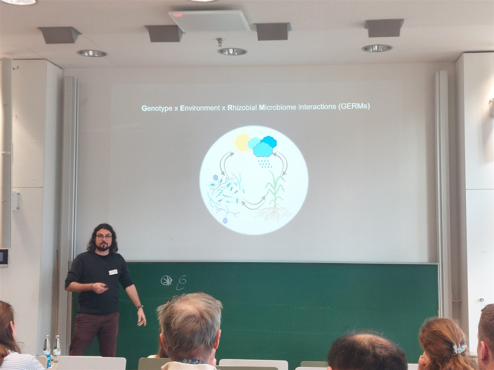
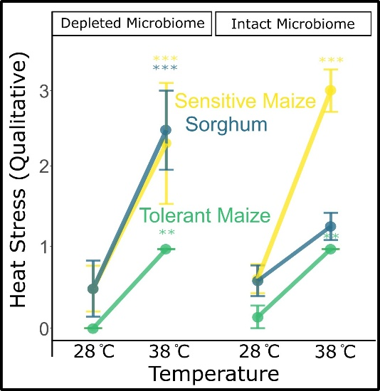
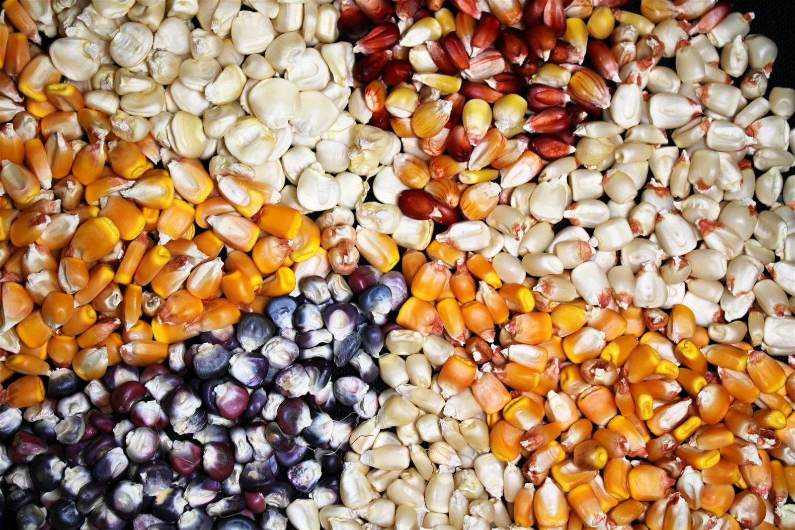
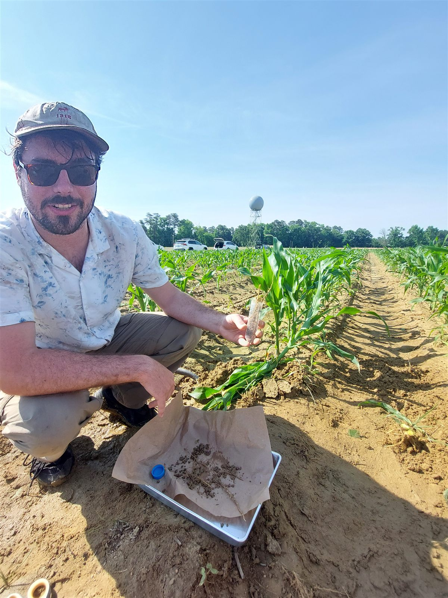

Research
How do plant genes and root microbes work together to help crops withstand stress?
The GERMs framework
A plant's performance depends on its genes and its environment, the classic G×E of plant breeding. But every root also lives in a community of soil microbes, and those microbes change what a plant can cope with. The Genotype × Environment × Rhizosphere Microbiome (GERMs) framework adds the root microbiome to the quantitative genetic models used in breeding. That lets us ask which plant genes recruit helpful microbes, and in which environments those partnerships matter.
Our first test of the idea is published in New Phytologist (Korth et al., 2026, open access). We sequenced plant and microbial transcripts together from maize and sorghum grown under heat stress in different soils. Host genotype and temperature jointly shaped what the microbes were doing, and microbial D-amino acid metabolism was linked to the plants' heat tolerance.

Research interests
Microbe-mediated mechanisms of heat stress
Heat waves are getting more frequent, and breeding crops for heat tolerance has been slow. Root microbes may offer a shortcut. In our greenhouse experiments, the same sorghum plants were badly injured by heat with a depleted microbiome but nearly as tolerant as heat-tolerant maize with an intact one.
Our data point to D-amino acids made by soil bacteria as one way microbes prime the plant's heat response. I want to find out how plants sense these molecules, which signaling pathways they switch on, and whether we can use that to protect crops in the field.

Nutrient stress and nitrogen cycling in heirloom maize
Nitrogen fertilizer boosts yields, but it is costly, energy-hungry, and pollutes waterways. Modern maize was bred in fields flooded with fertilizer, and along the way it seems to have lost some of its ability to work with soil microbes. Its relatives sorghum and teosinte still release root compounds that slow microbial nitrogen loss, while modern maize does not.
Heirloom maize, maintained by Indigenous American communities across very different environments, holds genetic diversity that modern hybrids have lost. In our early experiments, heirlooms took up more nitrogen than elite hybrids in low-nitrogen soil and assembled very different root microbiomes. I want to understand why and how, so we can begin to think about how to breed for microbiome traits.

Conserved mechanisms of plant–microbiome regulation
If a gene shapes the root microbiome in maize, does the same gene do it in sorghum, or in wheat? In our GERMs study, genes shared by maize and sorghum were linked to the same microbial pathways, which hints that some ways of managing microbes are conserved across grasses.
By comparing genetic mapping results across species and environments, I aim to find these shared regulators of microbiome assembly and test them with gene editing. Conserved mechanisms are the ones most likely to carry over to other crops.
